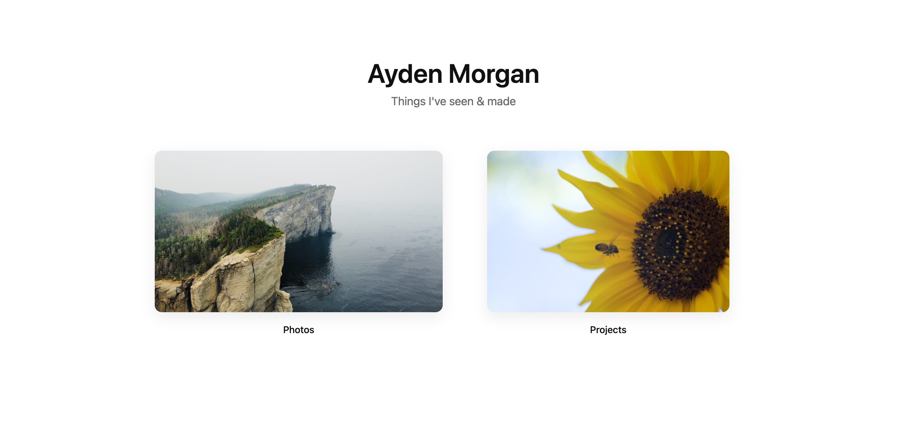
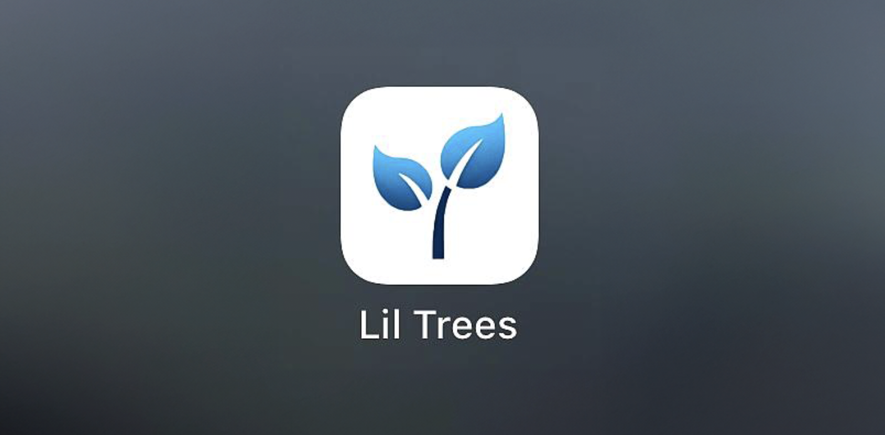

Projects

This Website
portfolio & personal archive
A custom site I built from scratch using HTML, CSS, and JavaScript to showcase my work, photography, and experiments with design and layout.
Delta Sigma Pi Website
chapter information portal
Designed and developed a modern site for the DSP chapter, featuring recruitment details, event calendars, and member resources. Focused on responsiveness and easy content updates.
Lil Trees (in development)
screen time blocking app
A mobile app helping users stop doomscrolling and control screen time through a gamified tree-planting experience. Built in Xcode, backed by Firebase.